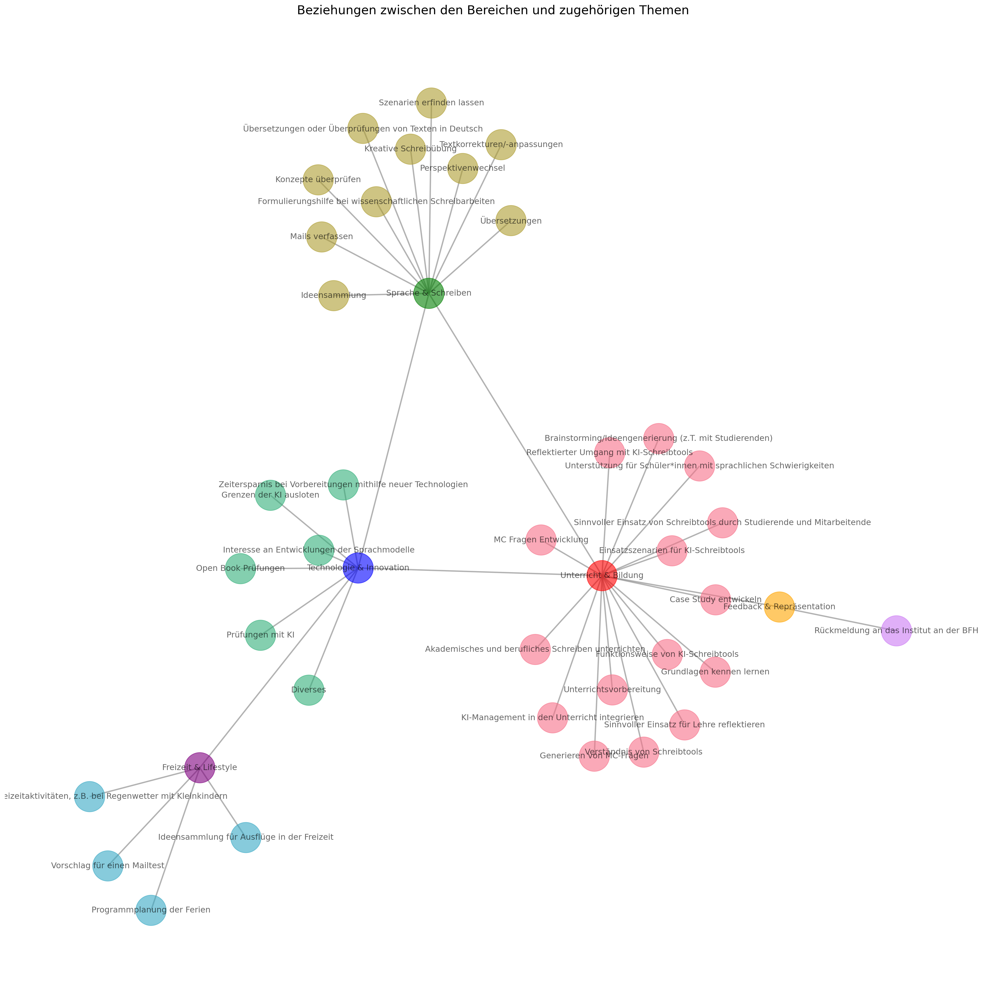
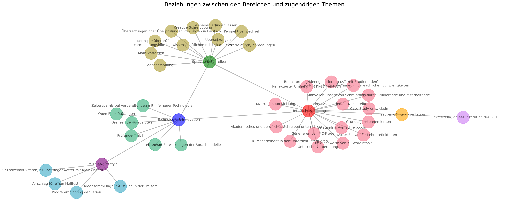

import matplotlib.pyplot as plt
import networkx as nx
import seaborn as sns
# Create a new graph
G = nx.Graph()
# Define the categories/nodes
categories = ["Unterricht & Bildung", "Sprache & Schreiben", "Technologie & Innovation", "Freizeit & Lifestyle", "Feedback & Repräsentation"]
# Add nodes to the graph
G.add_nodes_from(categories)
# Define the relationships/edges based on the interpretation
relationships = [
("Unterricht & Bildung", "Sprache & Schreiben"),
("Unterricht & Bildung", "Technologie & Innovation"),
("Sprache & Schreiben", "Technologie & Innovation"),
("Technologie & Innovation", "Freizeit & Lifestyle"),
("Unterricht & Bildung", "Feedback & Repräsentation")
]
# Add edges to the graph
G.add_edges_from(relationships)
# Define the topics under each category
topics = {
"Unterricht & Bildung": [
"MC Fragen Entwicklung", "Case Study entwickeln", "Unterrichtsvorbereitung",
"KI-Management in den Unterricht integrieren", "Grundlagen kennen lernen",
"Sinnvoller Einsatz für Lehre reflektieren", "Generieren von MC-Fragen",
"Brainstorming/Ideengenerierung (z.T. mit Studierenden)", "Akademisches und berufliches Schreiben unterrichten",
"Funktionsweise von KI-Schreibtools", "Einsatzszenarien für KI-Schreibtools",
"Reflektierter Umgang mit KI-Schreibtools", "Unterstützung für Schüler*innen mit sprachlichen Schwierigkeiten",
"Verständnis von Schreibtools", "Sinnvoller Einsatz von Schreibtools durch Studierende und Mitarbeitende"
],
"Sprache & Schreiben": [
"Formulierungshilfe bei wissenschaftlichen Schreibarbeiten", "Übersetzungen oder Überprüfungen von Texten in Deutsch",
"Kreative Schreibübung", "Übersetzungen", "Ideensammlung",
"Textkorrekturen/-anpassungen", "Perspektivenwechsel", "Szenarien erfinden lassen",
"Mails verfassen", "Konzepte überprüfen"
],
"Technologie & Innovation": [
"Diverses", "Zeitersparnis bei Vorbereitungen mithilfe neuer Technologien",
"Prüfungen mit KI", "Open Book Prüfungen", "Grenzen der KI ausloten",
"Interesse an Entwicklungen der Sprachmodelle"
],
"Freizeit & Lifestyle": [
"Fragen für Freizeitaktivitäten, z.B. bei Regenwetter mit Kleinkindern",
"Ideensammlung für Ausflüge in der Freizeit", "Programmplanung der Ferien", "Vorschlag für einen Mailtest"
],
"Feedback & Repräsentation": ["Rückmeldung an das Institut an der BFH"]
}
# Add topics as nodes to the graph
for category, topic_list in topics.items():
G.add_nodes_from(topic_list)
for topic in topic_list:
G.add_edge(category, topic)
# Get a color palette with as many colors as there are topics
colors = sns.color_palette("husl", len(topics))
# Map each category to a color
color_map = {}
for idx, category in enumerate(topics):
for topic in topics[category]:
color_map[topic] = colors[idx]
# Add colors for the categories themselves
category_colors = ["red", "green", "blue", "purple", "orange"]
for idx, category in enumerate(categories):
color_map[category] = category_colors[idx]
# Get the colors for each node in the order they are in the graph
node_colors = [color_map[node] for node in G.nodes()]Fragen und Themen
Themen
# Plotting the graph with different colors for each topic
plt.figure(figsize=(20, 20)) #figsize=(20, 15)
pos = nx.spring_layout(G, seed=42, k=0.5, iterations=100)
nx.draw(G, pos, with_labels=True, node_size=2000, node_color=node_colors, font_size=12, font_color='black', width=2, edge_color='gray', alpha=0.6)
plt.title("Beziehungen zwischen den Bereichen und zugehörigen Themen", fontsize=18)
plt.show()
# Adjust the figure size to be wider
plt.figure(figsize=(25, 10))
# Adjust the layout to be more spread out horizontally
pos = nx.spring_layout(G, seed=42, k=0.7, iterations=150, scale=2)
# Plotting the graph with the adjusted layout
nx.draw(G, pos, with_labels=True, node_size=2000, node_color=node_colors, font_size=12, font_color='black', width=2, edge_color='gray', alpha=0.6)
plt.title("Beziehungen zwischen den Bereichen und zugehörigen Themen", fontsize=20)
plt.show()